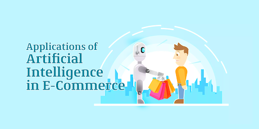
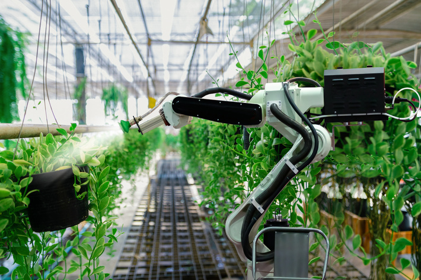

applications :
1. AI in E-Commerce:
Personalized Shopping:
Artificial Intelligence technology is used to create recommendation engines through which you can engage better with your customers. These recommendations are made in accordance with their browsing history, preference, and interests. It helps in improving your relationship with your customers and their loyalty towards your brand.AI-powered Assistants:
Virtual shopping assistants and chatbots help improve the user experience while shopping online. Natural Language Processing is used to make the conversation sound as human and personal as possible. Moreover, these assistants can have real-time engagement with your customers. Did you know that on amazon.com, soon, customer service could be handled by chatbots?Fraud Prevention
Credit card frauds and fake reviews are two of the most significant issues that E-Commerce companies deal with. By considering the usage patterns, AI can help reduce the possibility of credit card frauds taking place. Many customers prefer to buy a product or service based on customer reviews. AI can help identify and handle fake reviews.2. AI in Navigation
Based on research from MIT, GPS technology can provide users with accurate, timely, and detailed information to improve safety. The technology uses a combination of Convolutional Neural Network and Graph Neural Network, which makes lives easier for users by automatically detecting the number of lanes and road types behind obstructions on the roads. AI is heavily used by Uber and many logistics companies to improve operational efficiency, analyze road traffic, and optimize routes.3. AI in Robotics
Robotics is another field where artificial intelligence applications are commonly used. Robots powered by AI use real-time updates to sense obstacles in its path and pre-plan its journey instantly. It can be used for - • Carrying goods in hospitals, factories, and warehouses • Cleaning offices and large equipment • Inventory management4. AI in Human Resource
Did you know that companies use intelligent software to ease the hiring process? Artificial Intelligence helps with blind hiring. Using machine learning software, you can examine applications based on specific parameters. AI drive systems can scan job candidates' profiles, and resumes to provide recruiters an understanding of the talent pool they must choose from.5. AI in Healthcare
Artificial Intelligence finds diverse applications in the healthcare sector. AI is used in healthcare to build sophisticated machines that can detect diseases and identify cancer cells. AI can help analyze chronic conditions with lab and other medical data to ensure early diagnosis. AI uses the combination of historical data and medical intelligence for the discovery of new drugs6. AI in Agriculture
Artificial Intelligence is used to identify defects and nutrient deficiencies in the soil. This is done using computer vision, robotics, and machine learning, AI can analyze where weeds are growing. AI bots can help to harvest crops at a higher volume and faster pace than human laborers.7. AI in Gaming
Another sector where Artificial Intelligence applications have found prominence is the gaming sector. AI can be used to create smart, human-like NPCs to interact with the players. It can also be used to predict human behavior using which game design and testing can be improved. The Alien Isolation games released in 2014 uses AI to stalk the player throughout the game. The game uses two Artificial Intelligence systems - ‘Director AI’ that frequently knows your location and the ‘Alien AI,’ driven by sensors and behaviors that continuously hunt the player.8. AI in Automobiles
Artificial Intelligence is used to build self-driving vehicles. AI can be used along with the vehicle’s camera, radar, cloud services, GPS, and control signals to operate the vehicle. AI can improve the in-vehicle experience and provide additional systems like emergency braking, blind-spot monitoring, and driver-assist steering.9. AI in Social Media



